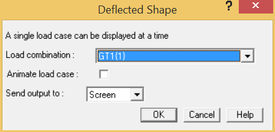
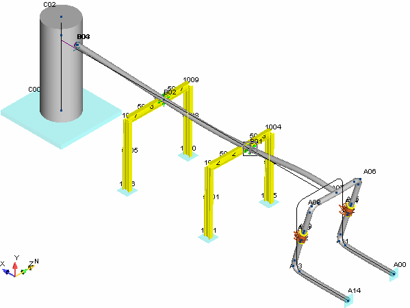

.jpg) Select Result > Interactive
> Displacement.
Select Result > Interactive
> Displacement.
- The Deflected Shape dialog is displayed as shown in the following figure.

- You want to review the deflected shape for the operating combination GR+T1 (Gravity plus thermal case 1). Note that this was one of the default combinations created. From the Load Combination selection list, choose the GT1 option, and then press OK.
- AutoPIPE graphically displays the deflected shape for this combination as shown in the graphic below. Note that the deflected shape is not the actual deflection, but exaggerated for identification purposes.

- Note the large displacements at point A07. To view the numeric values associated with this displacement, pick point A07 to make it the active point. The information window details additional information about the selected point.